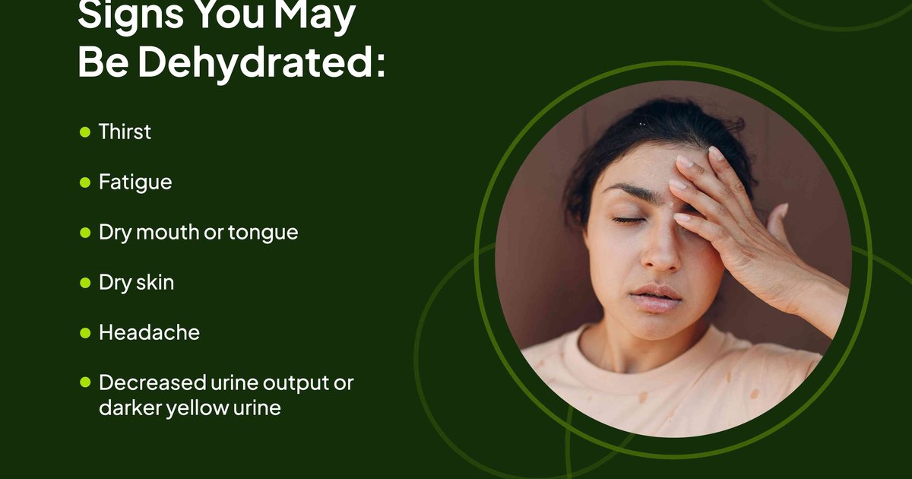

Do you have headaches that won’t go away? Do you feel tired all the time even when you sleep enough? Do you reach for snacks when you’re not really hungry? Do you have dry skin, constipation, or bad breath that doesn’t improve with brushing? Do you wake up with a dry mouth and dark yellow urine every morning? Do you feel dizzy when you stand up too fast? Do your muscles cramp for no reason? Do you get sugar cravings that feel urgent? Do you have brain fog in the afternoon that makes it hard to focus? Do you feel like you’re just not yourself, but you can’t figure out why? If you answered yes to several of these, you might be chronically dehydrated. Not the kind of dehydration where you collapse on a hike. The low‑grade, everyday kind that creeps up on you. The kind that doesn’t feel like an emergency but slowly wears down your energy, your mood, and your health. I see this constantly in my practice. People come in with a list of vague symptoms. Headaches, fatigue, constipation, bad skin. They think they have a medical condition. They’ve seen doctors, had tests, been told everything is normal. They’re not sick. They’re just not drinking enough fluid. Here are the ten most common signs of chronic dehydration, what they mean, and what to do about them. Sign number one is persistent headaches, especially in the afternoon. Your brain is about 75% water. When you’re dehydrated, your brain tissue loses volume and pulls away from the skull a little. That triggers pain receptors. The classic dehydration headache is a dull ache that starts behind the eyes or at the back of the head and gets worse as the day goes on. It often improves after drinking 500‑1,000 mL (17‑34 ounces) of water. If you get afternoon headaches regularly, try drinking a liter of water before reaching for ibuprofen. If the water helps, you were dehydrated. Sign number two is fatigue and brain fog. Your blood volume drops when you’re dehydrated. Your heart has to work harder to pump oxygen to your brain. Less oxygen means slower thinking, worse memory, and that “foggy” feeling. Studies show that even 1‑2% dehydration impairs cognitive performance. If you feel like you’re in a haze by 3 PM, drink 500 mL of water and see if you clear up. Sign number three is dark yellow or amber urine. This is the most obvious sign. Your urine should be pale straw most of the day. Dark yellow means you’re behind. Amber means you’re significantly dehydrated. The morning pee is always darker, so check your second or third void of the day. If it’s consistently dark, you’re not drinking enough. Sign number four is dry skin and lips. Your skin is your largest organ. When you’re dehydrated, your body prioritizes blood flow to vital organs like your brain and kidneys. Your skin gets less moisture. It becomes dry, flaky, less elastic. If you pinch the skin on the back of your hand and it doesn’t snap back quickly, that’s a sign of dehydration. Dry, cracked lips are another clue. Sign number five is constipation. Your colon absorbs water from waste. If you’re dehydrated, your colon pulls more water out of your stool, making it hard, dry, and difficult to pass. Increasing fluid intake is one of the first treatments for chronic constipation. If you’re eating enough fiber but still struggling, try drinking an extra 500‑1,000 mL of water per day for a week. Sign number six is bad breath. Saliva has antibacterial properties. When you’re dehydrated, you produce less saliva. Bacteria in your mouth grow faster, producing smelly compounds. That’s why morning breath is worse — you’ve gone all night without drinking. If your bad breath persists even with good oral hygiene, you might be chronically dehydrated. Sign number seven is dizziness when standing up. This is called orthostatic hypotension. When you stand, gravity pulls blood to your legs. Your body normally compensates by constricting blood vessels and increasing heart rate. Dehydration lowers your blood volume, so your body has a harder time compensating. You feel lightheaded, dizzy, or like you might faint. If this happens often, drink more water and add a pinch of salt. Sign number eight is muscle cramps. Cramps happen when your muscles don’t have enough fluid or electrolytes. Sodium, potassium, and magnesium all play roles in muscle contraction and relaxation. If you get night cramps in your calves or feet, or cramps during exercise, you might be low on water and salt. Try drinking 500 mL of water with a pinch of salt before exercise or before bed. Sign number nine is sugar cravings. Your body sometimes mistakes thirst for hunger. The signals come from similar parts of the brain. When you’re dehydrated, you might feel a sudden craving for something sweet. That’s because sugar is often found in fluids — soda, juice, sports drinks. Your body wants fluid, but your brain asks for sugar. Next time you crave a cookie, drink a glass of water first. Wait 15 minutes. See if the craving passes. Sign number ten is joint pain. Cartilage is about 80% water. When you’re dehydrated, the cartilage in your joints loses some of its cushioning. You might feel stiffness or achiness, especially in your knees, hips, and lower back. Increasing fluid intake won’t cure arthritis, but it can reduce symptoms caused by dehydration. I had a client named Cheryl who had six of these signs. Headaches, fatigue, dark urine, dry skin, constipation, and sugar cravings. She thought she had a thyroid problem. Her doctor ran tests and said everything was normal. She came to me frustrated. I asked her to do a three‑day fluid log. She was drinking about 1 liter (34 ounces) of fluid per day. Most of it was coffee and Diet Coke. Her urine was dark amber every afternoon. Her baseline need for a 65‑kilogram (143‑pound) woman in a temperate climate with light activity was about 2.2 liters (74 ounces). She was running a deficit of 1.2 liters per day, every day. We increased her water to 2.5 liters (85 ounces) per day, spaced out. Morning 500 mL, mid‑morning 500 mL, lunch 500 mL, afternoon 500 mL, dinner 500 mL. She also added a pinch of salt to her morning bottle. Within a week, her headaches were gone. Within two weeks, her skin looked better. Within a month, her constipation resolved. She said her sugar cravings disappeared. She lost 8 pounds because she stopped snacking on cookies and chips. She was eating out of thirst, not hunger. That’s the power of fixing chronic dehydration. It’s not dramatic. It’s not a miracle. It’s just giving your body what it needs. The problem is that chronic dehydration feels normal. If you’ve been dehydrated for years, you don’t remember what well‑hydrated feels like. You think headaches are just part of your life. You think fatigue is normal. You think your urine color is fine. It’s not. You’ve just adapted. The fix is simple. Drink more fluid. Not all at once. Spread it out. Start your morning with 500 mL of water. Keep a bottle on your desk. Finish it by noon. Refill. Finish by dinner. Check your urine color. Aim for pale straw. Add electrolytes if you sweat a lot or if you drink mostly plain water and still feel off. A pinch of salt in your water or an electrolyte tablet can make a big difference. I built a tool to help people assess their own signs.Daily Water Intake Calculator
Enter your symptoms. The tool estimates your dehydration risk and gives a starting fluid goal.
All data stays in your browser — we never see it.
Hydration Goal Setter
Log your symptoms along with your fluid intake. See which symptoms improve as you hydrate.
All data stays in your browser — we never see it.
Beverage Hydration Index Tool
Not all fluids hydrate equally. Use this tool to prioritize high‑BHI beverages.
All data stays in your browser — we never see it.